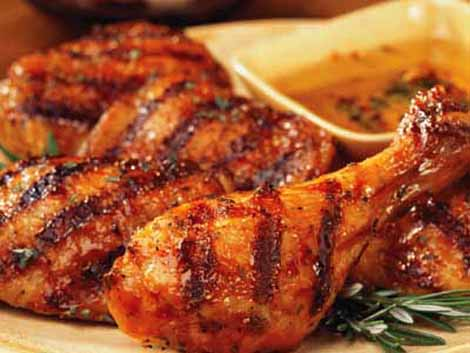

VEGITARIAN FOOD :-
Indulging in a plant-based culinary journey offers a sensory delight that extends beyond the mere act of eating. Picture a vibrant canvas of colors and textures, where fresh, crisp vegetables take center stage. A symphony of flavors unfolds with each bite – the earthy richness of roasted sweet potatoes, the zesty kick of a quinoa-stuffed bell pepper, and the aromatic embrace of curry-infused chickpeas. Immerse yourself in the comforting warmth of a lentil and sweet potato soup, and savor the exquisite umami notes of a mushroom risotto. These vegetarian creations are more than just meals; they represent a celebration of nature's bounty, a tapestry of wholesome ingredients woven together to create a harmonious and nourishing experience for both the palate and the soul. Let's see the recepie's here

Non-vegetarian cuisine invites a tantalizing journey through a myriad of savory experiences. From the aromatic allure of grilled meats, the succulence of perfectly seared steaks, to the delicate flavors of seafood, every bite is a celebration of culinary craftsmanship. Whether savoring the hearty comfort of slow-cooked pot roasts or the rich complexity of spice-infused curries, non-vegetarian fare tantalizes the palate with a diverse array of textures and tastes, embodying a world of gastronomic delights. Let's see the recepie's here
NON-VEGITARIAN FOOD :-
Non-vegetarian cuisine invites a tantalizing journey through a myriad of savory experiences. From the aromatic allure of grilled meats, the succulence of perfectly seared steaks, to the delicate flavors of seafood, every bite is a celebration of culinary craftsmanship. Whether savoring the hearty comfort of slow-cooked pot roasts or the rich complexity of spice-infused curries, non-vegetarian fare tantalizes the palate with a diverse array of textures and tastes, embodying a world of gastronomic delights. Let's see the recepie's here
ITALIAN FOOD :-
Italian cuisine, a symphony of simplicity and sophistication, tantalizes taste buds with its diverse flavors. From al dente pastas adorned in rich sauces to thin-crust pizzas topped with vibrant ingredients, each bite is a celebration of fresh, quality produce. Whether indulging in the robust richness of risottos or the sweet finale of tiramisu, Italian food effortlessly combines regional diversity with a commitment to exquisite taste.Let's see the recepie's here
MAXICAN FOOD :-
Mexican food is known for its bold and vibrant flavors, featuring a diverse array of ingredients such as chili peppers, corn, beans, and avocados. From savory tacos and enchiladas to spicy salsas and guacamole, Mexican cuisine offers a rich and satisfying culinary experience. here